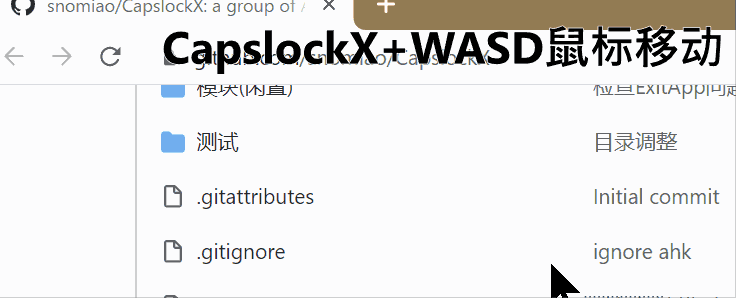
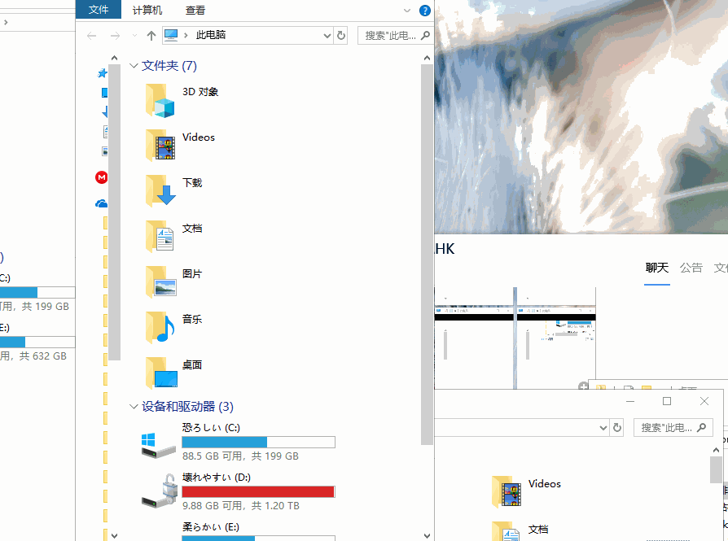
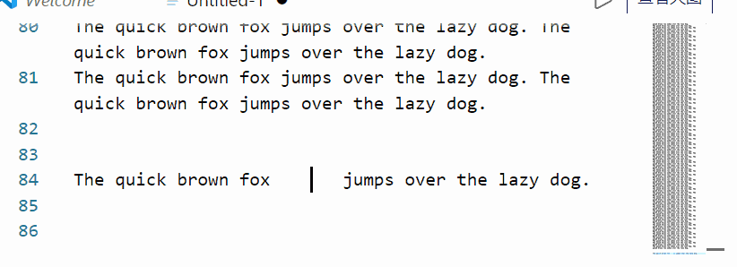
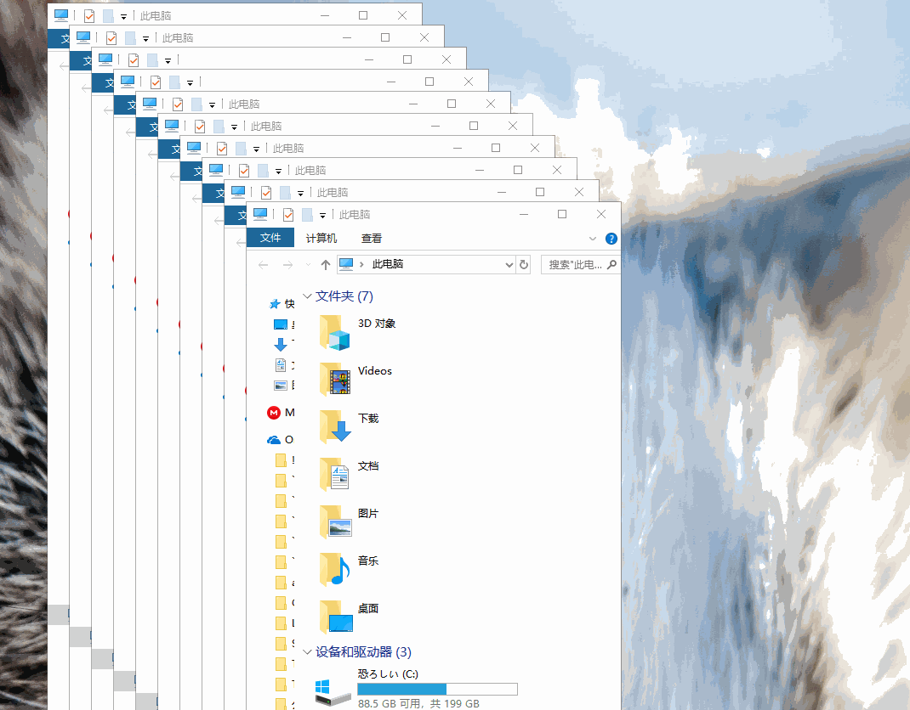

CapsLockX 2.0
Hold CapsLock or Space + a key. Navigate without leaving home row, dictate by voice, let an LLM drive your computer.
Hold CapsLock or Space + a key. Navigate without leaving home row, dictate by voice, let an LLM drive your computer.
Growing up using ThinkPad's TrackPoint (the red dot), I became addicted to its efficiency. When I switched to a Surface Book, I missed that precise control. CapsLockX was born from that itch — a tool that lets you drive everything from the keyboard, with acceleration-enabled mouse simulation.
Version 2.0 is a ground-up rewrite in Rust, with a platform-agnostic core and per-OS adapters. The Rust core also unlocks features the original AutoHotkey 1.x couldn't reach: local voice dictation, a streaming LLM brainstorm panel, and an LLM agent that operates the UI on your behalf.
CapsLock and Space become chord triggers.
Hold either + a key for instant actions, with zero conflict with
normal typing.
Space+V — local SenseVoice / whisper.cpp STT with
optional LLM polish, translation presets, and TTS fallback chain.
Space+M or clx agent — describe a task
and the agent drives the UI via the CLX command language
(keystrokes, mouse, AX-tree waits, 60 Hz pixel reflexes).
Physics-based mouse acceleration, vim-style cursor motion, and virtual-desktop / window-tiling commands tuned for daily use.
CapsLock can stay as a normal CapsLock when tapped; only the
chord (Space+CapsLock) locks you into CLX mode.
WASD move with acceleration, QE clicks, RF scroll.
HJKL cursor, YUIO page, G Enter, T Delete, N/P Tab — anywhere.
Switch desktops with 1–9. Cycle / close / tile windows with Z / X / C.
Space+B opens a streaming overlay to Gemini / OpenAI / Anthropic / Ollama / MLX.
Short voice commands return raw; long dictation flows through local MLX or LLM corrector for punctuation and cleanup.

Control the cursor with WASD + QE/RF, with acceleration.

Cycle, close, and tile windows with Z/X/C.

Vim-style cursor motion anywhere with HJKL + YUIO.

One-keystroke tiling and arrangement.
Z)C, with Shift for side-by-side)1–9✅ Available (Rust 2.0)
Apple Silicon & Intel · CGEventTap + AppKit, code-signed binary.
✅ Available (Rust 2.0)
Wayland & X11 · evdev + uinput.
✅ Available (1.x AutoHotkey)
The original 1.x build is stable. Rust 2.0 Windows adapter is in progress.
CapsLockX 2.0 is open source under GPL-3.0. The Rust workspace lives
at
snolab/CapsLockX
with a platform-agnostic core
(rs/core) and per-OS adapters
(rs/adapters/{macos, linux, windows, browser}). The
LLM agent's system prompt is editable at
skills/clx-agent/SKILL.md — no rebuild needed.